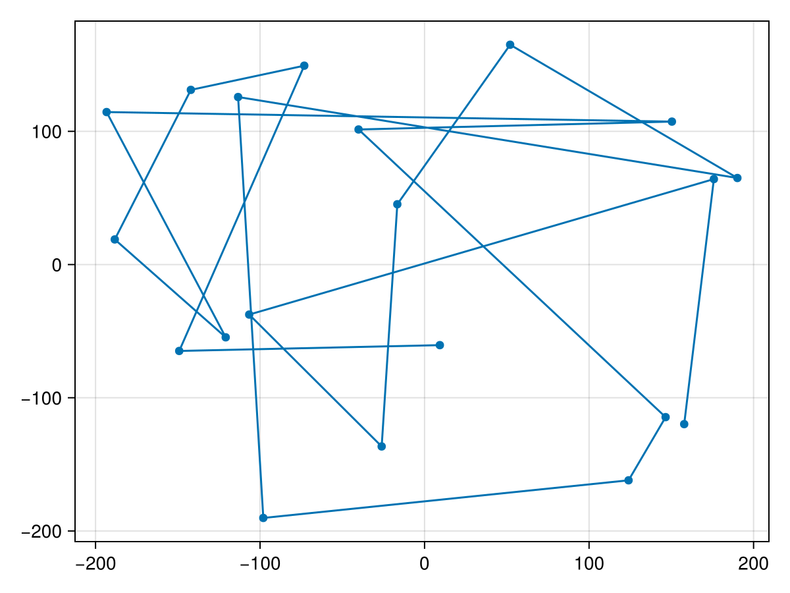
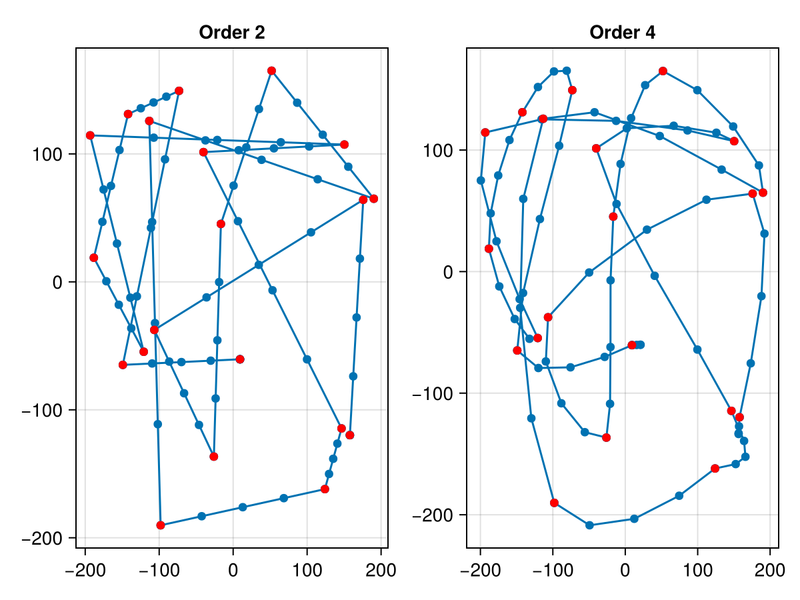
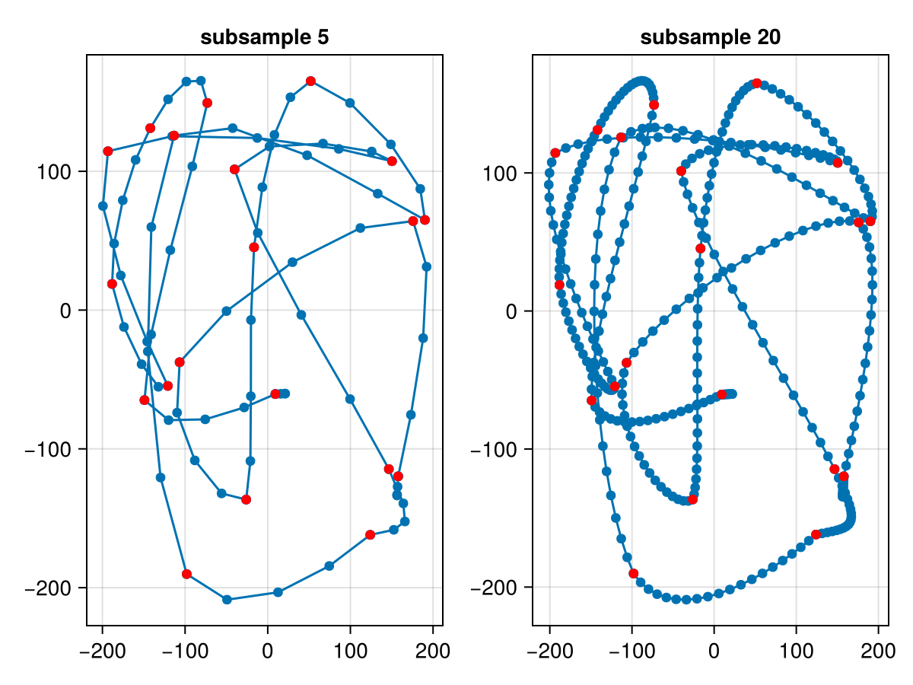
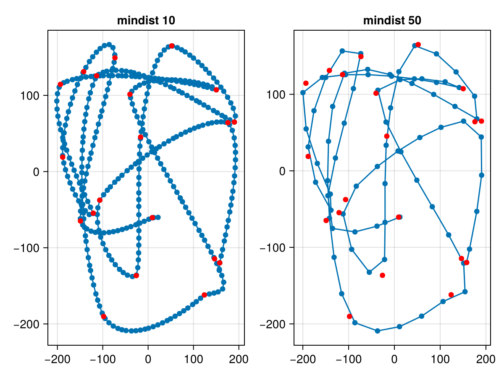

Interpolation
Interpolation
using ThesisArt
using CairoMakie
using RandomLet's define a (random) shape first
my_points = 400 .* (rand(MersenneTwister(1),Point2f,20).-Point2f(0.5,0.5))scatterlines(my_points)
The lines are not that nice. Let's interpolate them
order setting
my_xy_interpolated_2 =ThesisArt.rolling_interpolation(my_points;order=2)
my_xy_interpolated_4 =ThesisArt.rolling_interpolation(my_points;order=4) # default106-element Vector{GeometryBasics.Point{2, Float32}}:
[157.82256, -119.78998]
[157.08952, -127.26245]
[156.46927, -133.58531]
[156.52565, -133.01051]
[157.82256, -119.78998]
[157.82256, -119.78998]
[173.24464, -75.421906]
[188.02908, -20.19335]
[192.22122, 31.22136]
[175.86638, 64.14791]
⋮
[-75.62332, -78.74212]
[-28.452902, -70.153534]
[9.290982, -60.499332]
[9.290983, -60.499336]
[20.677866, -60.185646]
[21.172947, -60.172005]
[15.727046, -60.322033]
[9.290981, -60.499336]
[9.290981, -60.499336]f = Figure()
scatterlines(f[1,1],my_xy_interpolated_2,axis=(;title="Order 2"))
scatter!(my_points,color=:red)
scatterlines(f[1,2],my_xy_interpolated_4,axis=(;title="Order 4"))
scatter!(my_points,color=:red)
f
We see left linear interpolation, right cubic interpolation.
subsample
my_xy_interpolated_20 =ThesisArt.rolling_interpolation(my_points;subsample=20)
my_xy_interpolated_5 =ThesisArt.rolling_interpolation(my_points;subsample=5) #106-element Vector{GeometryBasics.Point{2, Float32}}:
[157.82256, -119.78998]
[157.08952, -127.26245]
[156.46927, -133.58531]
[156.52565, -133.01051]
[157.82256, -119.78998]
[157.82256, -119.78998]
[173.24464, -75.421906]
[188.02908, -20.19335]
[192.22122, 31.22136]
[175.86638, 64.14791]
⋮
[-75.62332, -78.74212]
[-28.452902, -70.153534]
[9.290982, -60.499332]
[9.290983, -60.499336]
[20.677866, -60.185646]
[21.172947, -60.172005]
[15.727046, -60.322033]
[9.290981, -60.499336]
[9.290981, -60.499336]f = Figure()
scatterlines(f[1,1],my_xy_interpolated_5,axis=(;title="subsample 5"))
scatter!(my_points,color=:red)
scatterlines(f[1,2],my_xy_interpolated_20,axis=(;title="subsample 20"))
scatter!(my_points,color=:red)
f
Equalize distance
my_xy_interpolated_100 =ThesisArt.rolling_interpolation(my_points;subsample=100)
my_xy_equ_10 = equalize_distance(my_xy_interpolated_100,min_dist=10)
my_xy_equ_50 = equalize_distance(my_xy_interpolated_100,min_dist=50)80-element Vector{GeometryBasics.Point{2, Float32}}:
[157.82256, -119.78998]
[164.1183, -102.351006]
[180.01411, -53.027847]
[190.56134, -5.7232065]
[189.77821, 44.21065]
[151.12505, 64.922424]
[101.91846, 56.833973]
[55.548077, 43.512424]
[7.917038, 25.922392]
[-37.221954, 5.694793]
⋮
[-89.52992, 107.43959]
[-109.5856, 62.221436]
[-128.80138, 16.678045]
[-145.2937, -32.425888]
[-135.20197, -75.28105]
[-86.15077, -79.805374]
[-38.08555, -72.299545]
[12.074724, -60.42265]
[9.290981, -60.499336]f = Figure()
scatterlines(f[1,1],my_xy_equ_10,axis=(;title="mindist 10"))
scatter!(my_points,color=:red)
scatterlines(f[1,2],my_xy_equ_50,axis=(;title="mindist 50"))
scatter!(my_points,color=:red)
f